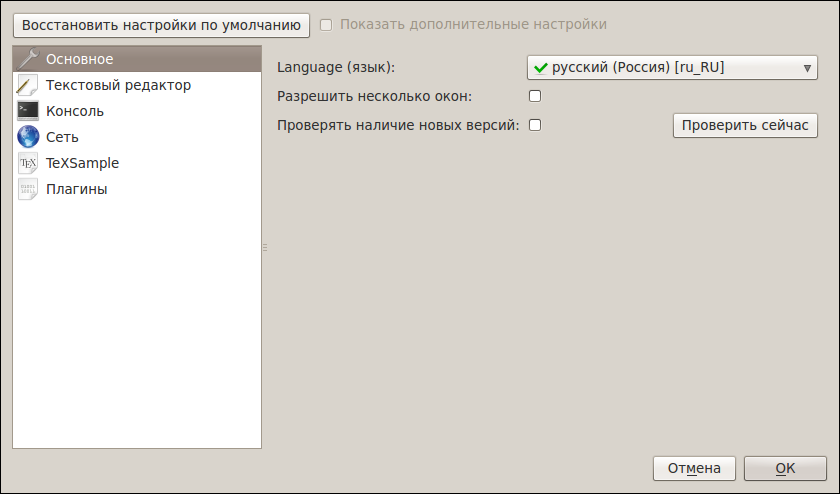

[Назад: 1. Начало работы]
[Далее: 1.2 Создание документа]
Настройки
Для более удобной работы с редактором предлагается несколько настроек. Они разделены на секции.
Чтобы получить доступ ко всем имеющимся настройкам, выберите опцию "Показать дополнительные настройки".
Чтобы вернуть настройки к исходным значениям, нажмите "Восстановить настройки по умолчанию" (действует не на все настройки).
Основные

Language (Язык). Отвечает за язык интерфейса всего приложения.
Разрешить несколько окон. Выбор этой опции позволяет открывать несколько окон редактора одновременно.
Если же опция не выбрана, то все файлы будут открываться в одном окне.
Текстовый редактор
Шрифт. Задает начертание символов (например, Courier New Roman, DejaVu Sans Mono и т.д.) для редактора.
Доступны только так называемые моноширинные шрифты, то есть те, у которых ширина всех символов одинакова.
Это ограничение необходимо для корректной работы в режиме блоков.
Выберите тот шрифт, который на ваш взгляд выглядит приятнее. Это повысит удобство работы.
Размер шрифта. Меняет размер символов. Эта опция относится только к тексту документов.
Для экономии места на экране можно установить размер поменьше,
а если символы выглядят слишком мелкими - напротив, побольше.
Длина строки. В TeX Creator используются строки фиксированной длины
(недостающие символы в конце строки заменяются пробелмаи, а при сохранении на диск эти пробелы убираются).
Такой подход позволяет удобно работать в режиме блоков,
а также устанавливать курсор в любое место строки без необходимости вручную вводить для этого символы пробелов.
Хорошим тоном считается не превышать длину строки в 120 символов, однако это не является строгим ограничением.
Помните, что для больших документов (несколько тысяч строк)
потребление оперативной памяти значительно возрастает с увеличением длины строки.
Если в открываемом документе окажутся строки с длиной, превышающей установленную,
то они будут разделены на несколько строк (по возможности - в тех местах, где стоят пробелы).
Будет показан специальный диалог, позволяющий быстро пройтись по разделенным строкам и
при необходимости внести исправления.
Ширина табуляции. Указывает, сколько символов пробела следует вставлять вместо символа табуляции.
В TeX Creator символы табуляции не используются, они всегда заменяются пробелами - как при нажатии клавиши Tab,
так и при открытии файла. Это необходимо для корректной работы в режиме блоков.
Кодировка по умолчанию. Позволяет выбрать, в какой кодировке открывать документы.
Выберите ту кодировку, в которой сохранено большинство файлов, с которыми вы работаете.
Помните, что файл всегда можно открыть заново в другой кодировке.
Рекомендуется по возможности сохранять файлы в кодировке UTF-8 (Юникод). Это считается хорошим тоном.
Консоль
Компилятор. Позволяет выбрать, какую команду использовать для компиляции.
Опции компилятора. Позволяет указать параметры компилятора (передаются компилятору перед именем файла).
Команды компилятора. Позволяет указать дополнительные команды компилятора (передаются после всех остальных параметров).
Удаленная компиляция. Позволяет компилировать файлы на удаленном сервере при наличии доступа к сети Интернет.
Возвращаться к локальному компилятору. Если эта опция выбрана, то, при недоступности системы удаленной компиляции,
будет использован локальный компилятор.
Makeindex. Запускает утилиту makeindex после компиляции.
Dvips. Запускает утилиту dvips после компиляции.
Всегда латиница. Если эта опция выбрана, то, независимо от раскладки клавиатуры, в консоль всегда будут вводиться символы латиницы.
TeXSample

Адерес сервера. Позволяет указать адрес сервера TeXSample. По умолчанию адрес выбирается автоматически.
Новые адреса автоматически добавляются в список. Их можно удалить в дальнейшем при помощи кнопки справа от поля адреса.
Логин. Логин пользователя TeXSample.
Пароль. Пароль пользователя. Если вы не хотите каждый раз вводить пароль при подключении,
можно включить сохранение пароля при помощи соответствующей кнопки справа. Это безопасно, так как пароль хранится в зашифрованном виде.
Автосоединение. Эта опция определяет, нужно ли автоматически подключаться к TeXSample при запуске редактора.
Включить кэширование. Если выбрано, то данные сервиса TeXSample будут сохраняться на диске,
чтобы не скачивать их с сервера каждый раз заново. Однако, файлы кэша занимают место на диске.
Можно воспользоваться кнопкой "Очистить кэш", если у вас заканчивается место на диске.
[Назад: 1. Начало работы]
[Далее: 1.2 Создание документа]